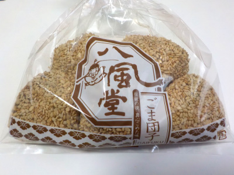

オイシスの八風堂こつぶごま団子５
2022/11/04

団子のまわりにはびっしりと小さなゴマがくっついています。どうやってこんなに沢山くっついた状態をキープしているんでしょう？凄いです。
このごま団子は油で揚げてないので、シンプルにゴマ味でした。しっとりしたコシアンはしっかり甘く、団子はあっさりでした。
ビニール袋に入っているだけの簡単包装がいいですね。ゴミが少なくていいです。お皿等を用意するのが手間ですが、ちゃんとした器で食べると味が美味しく感じるのでいいかもしれません。